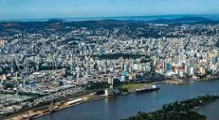

O Rio Grande do Sul é um estado localizado na região Sul do Brasil, conhecido por sua cultura gaúcha, com tradições como o chimarrão, o churrasco e as festas típicas. Sua economia é forte na agricultura, pecuária, indústria e mineração. O estado possui uma diversidade de paisagens, incluindo pampas, serras e litoral, além de cidades históricas e uma rica cultura regional. É um lugar que combina tradição, natureza e desenvolvimento econômico.
